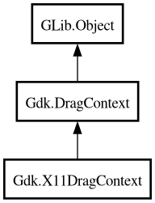

X11DragContext
Object Hierarchy:

Description:
[
Version ( deprecated_since =
"vala-0.24" , replacement =
"Gdk.X11.DragContext" ) ]
public class X11DragContext :
DragContext
Warning: X11DragContext is deprecated since vala-0.24. Use Gdk.X11.DragContext.
Content:
Creation methods:
Inherited Members:
All known members inherited from class Gdk.DragContext
All known members inherited from class GLib.Object